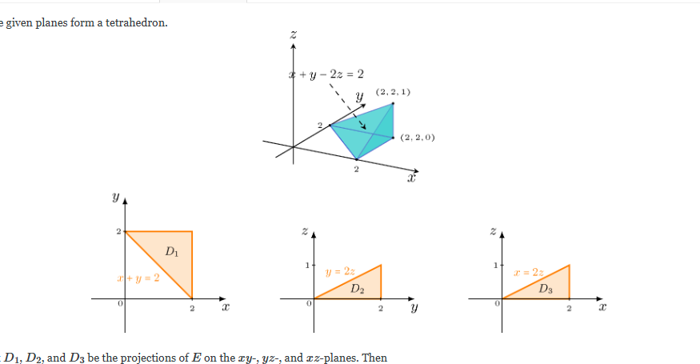
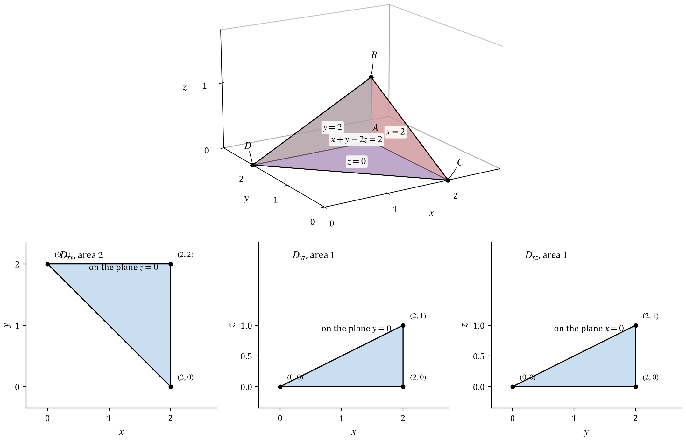
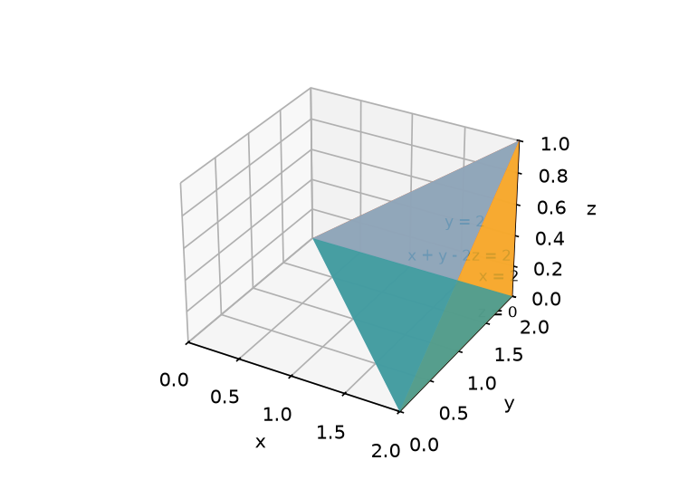
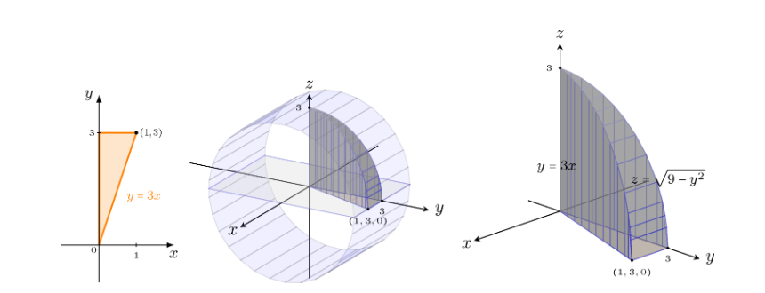
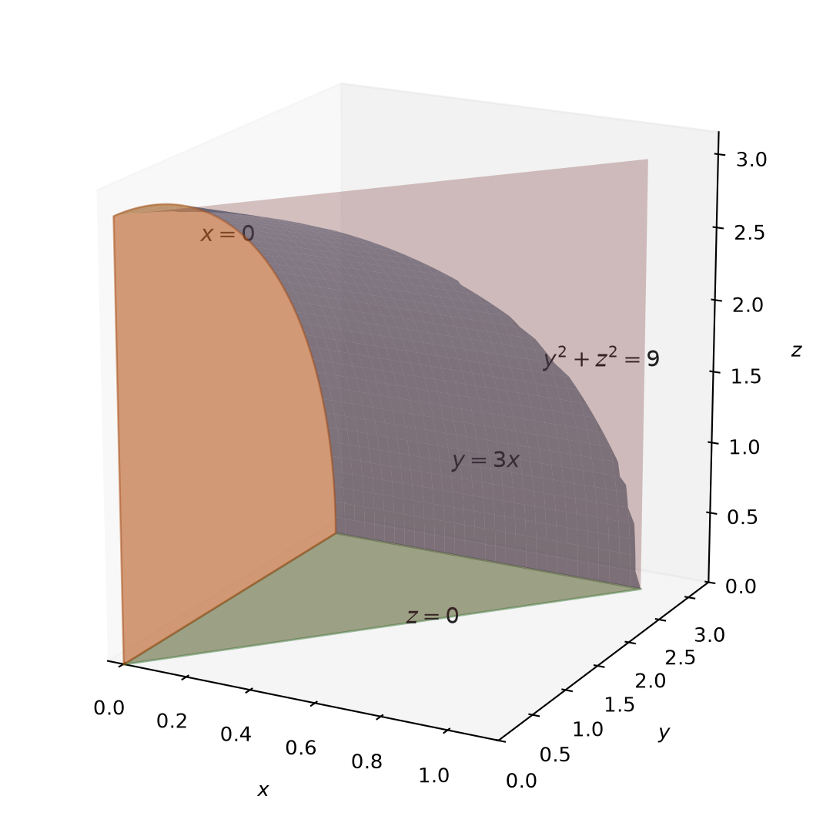

🔧 The RSI framework
📌 The framework is a DeepSeek Harness plugin, dsh-mcma 0.41.2, with four local source patches: the provider list, the flat activation spec, the pass budgets, and the status loss type. It adds these tools to the live session:
| Tool | Role | What it changes |
|---|---|---|
mcma_forward | 🤖 Forward pass | Runs the tutor on one problem.png. The tutor plans, verifies, plots, and composes a page. The pass is scored against the rubric. |
mcma_feedback | 💬 Feedback | Gives the evaluator the canonical solution.png as the baseline. The evaluator names defects in the tutor output. |
mcma_backward | ⬇ Backward pass | Writes the next parameters version. The tutor prompt gains text distilled from the evaluator findings. |
mcma_resume | 🔄 Recovery | Continues one interrupted session from its last finished stage. It does not restart the pass. |
mcma_test | ✅ Test | Runs one forward pass at the fixed current version, with no feedback and no backward pass. |
validate | 📋 Validation | Optional held-out split. It was not run in this experiment, by instruction. |
📌 The plugin also exposes HTTP stage limits. The operator set intake 120 s, tutoring 900 s, grading 600 s, self-eval 300 s, and self-evolve 240 s, which gives a tutoring pass budget of 1,320 s. The limits were set through the documented endpoint, not by editing the read-only config.
🔄 The training protocol
📌 One problem gives one parameters step. The loop is serial: one forward pass at a time, for 17 passes.
problem.png at the current version.solution.png to the evaluator. The evaluator names defects in the tutor page.🧮 The loss formula
Loss = (5 − weighted rubric score) / 5, with weights 0.30 correctness, 0.20 clarity, 0.20 pedagogy, 0.20 verification, and 0.10 presentation.
📌 The rubric is a judge, not a gradient. The backward pass writes text. It does not tune weights. The prompt is the parameter that moves.
📋 The two recipes
✅ 1. DeepSeek Flash (Internet) + MCMA RSI
| 💻 Harness | DeepSeek Harness on the PC, PTC mode |
|---|---|
| 🧠 Model | deepseek-flash, Internet API |
| ⚡ Speed | 200 tokens/s |
| 📄 Output | report.html; 13 of the 25 folders also hold an identical tutorial.html |
| 🤖 Work | 17 training passes, 7 test passes |
| ⏱ Time | 16 h 57 m elapsed for train and test; 14 h 07 m active |
| 📦 Status | Worked. Learned a visible plot recipe. |
| 📁 Data | dsh-workspace-20261124-1 |
⚠ 2. Qwen3.8-27B (HPC) + v17 transfer
| 💻 Harness | DeepSeek Harness on the PC, code mode |
|---|---|
| 🧠 Model | Qwen3.8-27B, HPC VLLM server |
| ⚡ Speed | 40 tokens/s |
| 📄 Output | solution.html from prebuilt tools/render.py |
| 🤖 Work | 24 problems, one forward pass each, no learning |
| ⏱ Time | 5 h 44 m wall against a 4 h budget |
| 📦 Status | Math and gate worked. Learned plot style did not transfer. |
| 📁 Data | dsh-workspace-20261124-2 |
📌 The recipes share the harness and the Python tools. They differ in the model, the server, the prompt form, and the page builder. DeepSeek runs the learning loop. Qwen receives the compiled result.
📜 The learned instruction
📌 The instruction is the trained parameter. Version v0 is the 64-line prompt from the last log. Version v17 is a 424-line prompt. The tutor prompt grew from 1,432 to 21,584 characters; the prompt.extra field grew from 272 to 11,952 characters.
📄 v0 — 64 lines
- Read
problem.png. - Write
solution/solution.htmlwith KaTeX. - Verify each deduction with a Python script.
- Draw the figures and embed them as Base64.
- Explain the symbols.
- Use ASD-STE100 and Google Python Style.
🧪 v17 — 424 lines
- 📋 A five-dimension score model.
- 📁 A fixed file and artifact map, with
check_solution.pyandgate.log. - 🔄 A seven-phase work order: intake, plan, verify, figures, compose, gate, report.
- 🧮 A verification law: no print, no sentence; two independent methods; a stated tolerance.
- 📄 A page law: required section order and content rules.
- 📈 A figure law: arrowheads, label placement, closure, dash patterns, clearance assertions.
- ⚠ A compiled list of 17 anti-patterns from graded products.
- 🔧 Operating limits and a definition of done.
💡 Where the plotting recipe lives. The figure law and several anti-patterns hold the learned plot experience. The law asks for one label mechanism per axis with an arrowhead, a label at a point that its own equation satisfies, a closed body with high wall alpha, and a measured clearance before export. The anti-patterns name defects that earlier passes shipped: a label off its surface, decoration on the data, a legend clipped by the axes edge.
📌 The full v0 and v17 prompts are in the explorer: dsh-deepseek-flash/instructions-v0.html and dsh-deepseek-flash/instructions-v17.html.
🐢 The transfer instruction
📌 The Qwen prompt is a compiled version of v17, cut for a 40 tokens/s decoder. It keeps the quality rules and adds cost rules: 24 problems, 4 hours, 600 s per problem, 8,000 output tokens per problem, and 6 turns per problem.
| Transfer rule | Reason |
|---|---|
| 🔧 The tools are built. Do not rebuild them. | render.py and check.py are prebuilt. The model never spends output tokens on a page shell or a KaTeX bundle. |
| ⚡ One message may hold several tool calls. | At 40 tokens/s, serial turns cost more than parallel scripts. |
| 📜 Never restate the problem or a plan. | Reasoning tokens are the scarce resource. |
📄 Never open solution.html. | Each page is about 800 KB. A read wastes the window. |
| ⏱ If a problem passes 540 s, skip the figure and finish. | The 4 h budget cannot absorb a long figure loop. |
✅ Do not report done without PASS and ls. | The release gate is the only proof of a valid page. |
📌 The full transfer prompt is in the explorer: dsh-qwen3.8-27b-hpc/instructions.html. The operator notes for the prebuilt tools are at dsh-qwen3.8-27b-hpc/tools-notes.html.
🎨 What the training learned, in one example
📌 Problem 15.7.32 asks for the integral over a tetrahedron in six orders. The v17 DeepSeek page answers it and also draws two figures that the v0 prompt never asked for.
| Figure | Learned element | Transfer to Qwen3.8-27B |
|---|---|---|
| 📈 3D solid | A labelled tetrahedron with vertex letters A–D and four plane labels in boxes. | ❌ One 3D panel, clipped low-contrast labels, no vertex letters. |
| 📈 2D projections | Three labelled projection panels with corner coordinates and the area of each base. | ❌ No projection panel at all. |
📌 The same problem, three ways. Click a figure to open it full size. The caption links to the source page.



📌 Problem 15.7.18 asks for the integral over a quarter cylinder cut by two planes. The learned recipe did not cover the hard part.
| Element | DeepSeek at v17 | Qwen3.8-27B transfer |
|---|---|---|
| 📈 3D perspective | One 3D panel with translucent surfaces. The callouts come from a fixed offset table, so two labels land on the wrong surface. | ❌ One 3D panel. The plane and cylinder labels collide on the curved wall, and the viewpoint is not adjusted. |
| 🎨 Perspective illusion | Not adjusted. The panel does not separate the cylinder wall from the cut plane. | ❌ Not considered. The labels overlap on the curved surface. |
📌 The same problem, three ways. The hard part is the viewpoint and the label placement, not the equation of the region.



💡 The lesson
📌 The training learned the simple recipe: label a solid, add a projection, put the labels on the objects. It did not learn the hard recipe: choose a viewpoint that separates two surfaces, and place a label where the eye reads it.
🔧 The plan restores the classic plotting prompts from the old DeepAgents MCMA system message. Those prompts asked for both a pyplot plot and a PGFplots plot, and for a 2D and a 3D view of every 3D problem. See Future Plans.
🤖 The old system message
📌 The old DeepAgents-based MCMA used a long system message. It defined the math domains, the built-in tools, the plot_pyplot and plot_pgfplots tools, and the final output procedure. It required, for every 3D problem, one 3D pyplot, one 3D PGFplots, one 2D pyplot, and one 2D PGFplots plot.
✅ The new harness dropped that requirement. The v17 figure law is stronger on label discipline but weaker on the 2D/3D pair. The restoration of the classic rule is the first actions item in the plan.
📌 The full old system message is in the explorer: __remarks__/system-message.html.